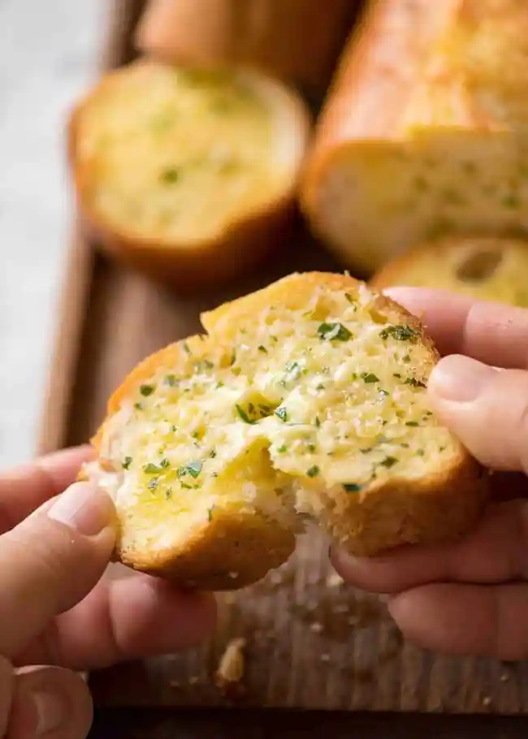

Homemade Garlic Bread

Description
There are many ways to make garlic bread. But for me, the Dominos way will always be the best way: a baguette sliced almost all the way through, then each piece slathered with garlic butter, wrapped in foil and baked until toasty.
Ingredients
- 1 French stick / baguette
- 125 g / 1 US stick unsalted butter -softened
- 2 tsp fresh garlic -minced
- 1/2 tsp salt
- 2 tsp finely chopped parsley
Steps
- Preheat oven to 200C/390F.
- Cut the French stick in half. Then cut the bread almost all the way through into 2cm / 4/5" thick slices.
- Mix together the butter, garlic, salt and parsley. Taste to see if it's salty / garlicky enough for your taste.
- Smear garlic butter over cut side of bread.
- Smear remaining butter on the top and sides of the bread.
- Wrap each bread in foil.
- Bake for 15 minutes until the crust is crispy (check through foil).
- Unwrap and serve!